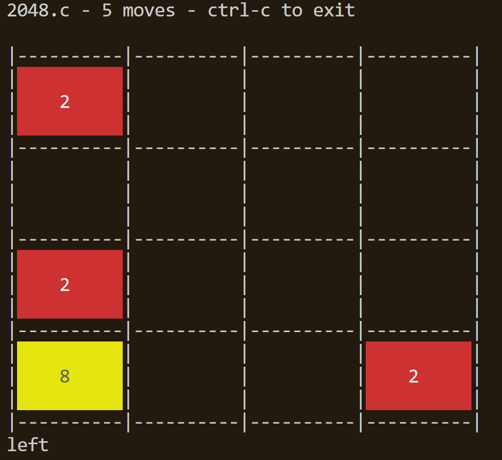
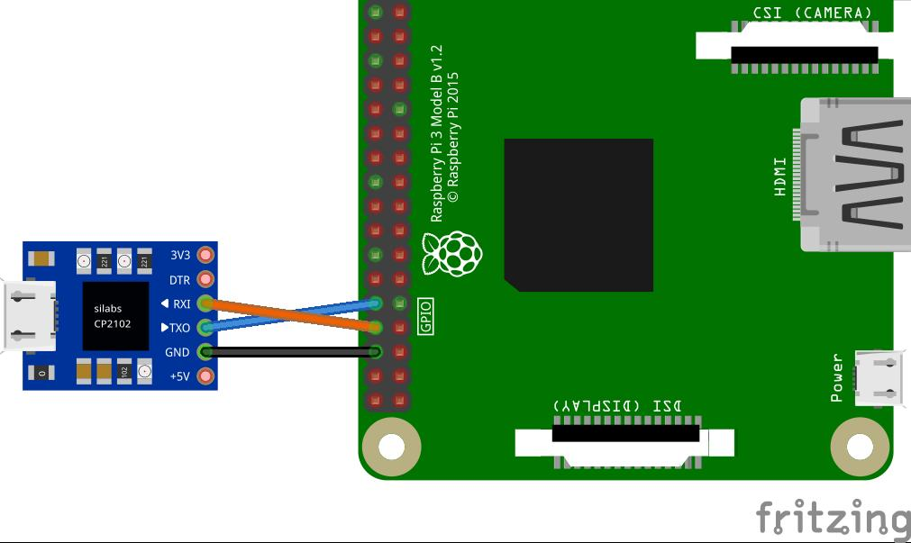

欢迎使用 RuxOS！
该项目为 RuxOS 手册，面向应用开发者和内核开发者，包含以下内容：
-
RuxOS 概述
-
使用 RuxOS 运行应用
-
RuxOS 整体设计
RuxOS 手册仍在完善中。
RuxOS 是什么？
RuxOS 是一个兼容 Linux 应用的轻量化库操作系统，主要遵循 unikernel 设计思想，由矽望社区维护。
考虑到边缘泛在计算场景下，应用通常数目有限且相对固定，因此将操作系统简化设计为只支持单应用，将内核功能封装为库，以系统调用的形式提供给应用，应用直接运行在内核态。
这种库形态的操作系统应用性能会有极大提升，安全问题(security)主要交给底层的 Type 1 hypervisor(hvisor) 解决。库形态的操作系统需要良好的工具支持，以方便用户根据单一应用生成构造可运行的二进制镜像，如 unikraft。
RuxOS 仍然处于开发阶段，目前已完成了对部分主流应用的支持。
RuxOS 概述
本章将对 RuxOS 做一个简单的介绍。
运行现有应用
本章节将会介绍：
-
RuxOS 的编译参数说明及常用的运行命令
-
如何使用 RuxOS 运行现有的应用
编译参数说明
RuxOS 提供了看起繁杂但却灵活且明确的编译参数，来针对多种类型的应用进行构建和运行。
通用参数
| General Options | |
|---|---|
| ARCH | 目标架构： x86_64, riscv64, aarch64. 默认架构为 x86_64。 |
| PLATFORM | 在 platforms 目录下定义的目标平台。该参数可以由用户定义，也可以根据 ARCH 参数进行生成。里面包含了平台相关的参数定义。 |
| SMP | CPU 核数。如果该参数大于1，就会启用多核的特性。默认值为1。 |
| MODE | 与 cargo build 相关的模式，默认为 release。 |
| LOG | 日志等级: warn, error, info, debug, trace。默认是 warn。 |
| V | Verbose 等级: (empty), 1, 2 |
| ARGS | 命令行参数，使用逗号分隔，不允许空格，可以为空。用来给应用程序传递具体的参数，即 argc，argv。 |
| ENVS | 环境变量参数，使用逗号分隔，不允许空格，可以为空。 |
应用参数
| App Options | |
|---|---|
| A/APP | 应用程序目录的路径。支持相对路径和绝对路径。默认指向 apps/c/helloworld.。 |
| FEATURES | RuxOS 模块的 feature。该参数用于在命令行开启用户想要的额外 feature，而不需要出现在具体应用的 features.txt文件中。 |
| APP_FEATURES | rust 应用的额外 feature。 |
Qemu 参数
| Qemu Options | |
|---|---|
| BLK | 使能 qemu virtio-blk 后端。如果应用需要对数据进行持久化，或者通过文件系统传递配置文件，则需要设置该参数。 |
| NET | 使能 qemu 的 virtio-net 后端。如果应用需要使用网络，则应该设置该参数。 |
| GRAPHIC | 使能 qemu 的 virtio-gpu 后端，用于图形界面输出。 |
| BUS | 选择设备总线类型：mmio, pci。 |
| DISK_IMG | 文件系统磁盘镜像的路径。默认值是根目录的 disk.img。 |
| ACCEL | 使能 x86 的 KVM 硬件加速。 |
| QEMU_LOG | 使能 qemu 的日志，默认输出到 qemu.log 文件中，里面包含运行的汇编代码。 |
| NET_DUMP | 网络包抓取，输出到根目录的 netdump.pcap 文件中。 |
| NET_DEV | qemu 网络设备类型：user, tap。 |
| START_PORT | qemu 开放的端口的起始端口号（默认是5555号端口）。 |
| PORTS_NUM | qemu 开放的端口的数量（默认是5个）。 |
9P 参数
| 9P Options | |
|---|---|
| V9P_PATH | host 上用于共享的文件目录。默认值是根目录。 |
| NET_9P_ADDR | 9p netdev 的地址和端口。默认值是 127.0.0.1:564。 |
| ANAME_9P | 9pfs 的路径。 |
| PROTOCOL_9P | 9p 协议类型。 |
网络参数（默认端口号 5555）
| Network Options | |
|---|---|
| IP | Ruxos IPv4 地址（qemu user netdev，默认是 10.0.2.15）。 |
| GW | 网关 IPv4 地址（qemu user netdev，默认是 10.0.2.2）。 |
Libc 参数
| Libc Options | |
|---|---|
| MUSL | 使用 musl libc 来进行编译、链接。默认情况下 RuxOS 用的是 ruxlibc 。用户可以通过设置 MUSL=y 来使能 musl libc。 |
运行命令
RuxOS 提供了多种运行命令，以满足不同的需求，包含编译、运行、调试等。这些命令需要在 RuxOS 根目录下运行。
make build
编译指定的应用，默认为 helloworld 应用，生成可供 qemu 直接运行的二进制内核文件。
make run
运行指定的应用，包含了 make build 的过程，将生成的二进制内核文件传给 qemu，qemu 的参数根据用户声明的编译参数进行生成。
make disasm
将运行的二进制指令反汇编，生成文件包含了运行过程中的所有汇编指令。
make debug
启动 GDB 进行调试。
make disk_img
借助 dd，mkfs 命令生成一个 fat32 镜像文件，传给 qemu 作为磁盘文件。
当涉及到需要使用文件系统、块设备存储的程序时，需要提供给 qemu 一个块设备。
make clean_c
清除 ruxlibc 的 libc.a 以及 C 应用程序声明的 app-objs，如果对应的应用程序的 axbuild.mk 也写了 clean_c
也会相应的运行。
make clean_musl
清除 musl libc 生成的 install 目录和 build 目录，该命令之后，运行 musl libc 相关的应用时会重新编译 musl libc。
make clean
该命令包含 make clean_c，make clean_musl，同时会清除应用程序的 elf 文件和 bin 文件，并执行 cargo clean。
make clippy
借助 clippy 做代码规范检查。
make fmt
借助 cargo fmt 对调整 Rust 代码格式。
make fmt_c
对 C 代码格式进行规范。
make test
对 apps/ 目录下的应用进行测试，并通过比对输出结果与相应的 .out 文件来判断是否正确。
现有应用
Hello World!
RuxOS 借助 make 工具，为用户提供了完善而便捷的方式来运行应用。
例如一个最简单的 hello world 应用，源码如下：
#include <stdio.h>
int main()
{
printf("Hello, %c app!\n", 'C');
return 0;
}
运行方式为：
make A=apps/c/helloworld run
参数解释：
A: 该参数指向运行的应用程序的目录
通过运行上述命令，一个简单的 C 应用就成功启动了，一个可能的运行示例结果显示如下：
8888888b. .d88888b. .d8888b.
888 Y88b d88P" "Y88b d88P Y88b
888 888 888 888 Y88b.
888 d88P 888 888 888 888 888 888 "Y888b.
8888888P" 888 888 `Y8bd8P' 888 888 "Y88b.
888 T88b 888 888 X88K 888 888 "888
888 T88b Y88b 888 .d8""8b. Y88b. .d88P Y88b d88P
888 T88b "Y88888 888 888 "Y88888P" "Y8888P"
arch = x86_64
platform = x86_64-qemu-q35
target = x86_64-unknown-none
smp = 1
build_mode = release
log_level = error
Hello, C app!
Iperf3
iPerf3 是一个用来测试网络实时带宽性能的工具.
拉取 Iperf 目录
执行：
git clone https://github.com/syswonder/rux-iperf ./apps/c/iperf/
该命令将拉取 iperf patch 等文件放到 apps/c/iperf 目录下。
构建、运行
通过下面的命令，在 RuxOS 上启动 iperf3 服务器：
# in ruxos root directory
make A=apps/c/iperf BLK=y NET=y ARCH=<arch> run
基准测试
打开另一个终端，运行 iperf3 的客户端：
-
RuxOS-iperf3 作为接收端:
# TCP iperf3 -c 127.0.0.1 -p 5555 # UDP iperf3 -uc 127.0.0.1 -p 5555 -b <sender_bitrate> -l <buffer_len>用户需要设置
<sender_bitrate>参数来避免在使用 UDP 的时候，从客户端发送的包过快。 -
RuxOS-iperf3 作为发送端:
# TCP iperf3 -c 127.0.0.1 -p 5555 -R # UDP iperf3 -uc 127.0.0.1 -p 5555 -b 0 -l <buffer_len> -R
默认情况下，<buffer_len> 针对 TCP 是 128KB，针对 UDP 是 8KB。扩大缓冲的长度也许可以提高性能。用户可以通过设置 -l 后的参数来改变这一长度。
注意，在使用 UDP 的时候，如果 <buffer_len> 大于了 1472 （总的数据包长度超过了网卡的最大发送单元长度 MTU），数据包需要被切割，需要使能 smoltcp 的 fragmentation feature：
# in ruxos/modules/axnet/Cargo.toml
[dependencies.smoltcp]
git = "https://github.com/rcore-os/smoltcp.git"
rev = "2ade274"
default-features = false
features = [
"alloc", "log", # no std
"medium-ethernet",
"proto-ipv4",
"socket-raw", "socket-icmp", "socket-udp", "socket-tcp", "socket-dns",
# "fragmentation-buffer-size-65536", "proto-ipv4-fragmentation",
# "reassembly-buffer-size-65536", "reassembly-buffer-count-32",
# "assembler-max-segment-count-32",
]
Sqlite
Redis
RuxOS 支持在 Qemu 上运行 Redis 服务器端。
拉取 Redis 目录
运行：
git clone https://github.com/syswonder/rux-redis ./apps/c/redis/
该命令将拉取 Redis 相关的 makefile 以及 patch 文件到 apps/c/redis 目录下。
创建文件系统镜像
在 RuxOS 根目录运行：
make disk_img
该命令会在根目录生成一个文件系统(fatfs)镜像 disk.img，传给 qemu 使用。
运行 Redis-Server
运行下面的命令，会在 5555 端口上启动 Redis 服务器端。
make A=apps/c/redis/ LOG=error NET=y BLK=y ARCH=aarch64 SMP=4 ARGS="./redis-server,--bind,0.0.0.0,--port,5555,--save,\"\",--appendonly,no,--protected-mode,no,--ignore-warnings,ARM64-COW-BUG" run
参数解释：
-
A: 该参数指向 Redis 应用所在的目录。 -
LOG:LOG表示输出的日志等级，更低的日志等级意味着更详细的输出。可选包含：error,warn,info,debug,trace。 -
NET: 该参数用于使能 qemu 的 virtio-net。 -
BLK: 该参数用于使能 qemu 的 virtio-blk。 -
ARCH:ARCH表示将 RuxOS 运行在何种架构上，可选架构参数包括:x86_64,aarch64,riscv64. -
SMP:SMP用于使能 RuxOS 的多核 feature，紧跟着的数字表示启动的核数。 -
ARGS:ARGS提供 redis-server 运行所需要的参数。这里表示将 redis-server 运行在 qemu 的 0.0.0.0:5555，且不对数据做周期性的持久化。
通过运行上述命令，Redis 的服务器端在端口 5555 上启动。
如何连接、测试
推荐使用 redis tools 来连接到 Redis 服务器:
sudo apt install redis-tools
redis-cli
运行：
redis-cli -p 5555
之后就可以执行所有 redis 的客户端命令，与在 linux 等操作系统上运行无异。
redis-benchmark
使用 Redis benchmark 基准测试工具来进行测试:
redis-benchmark -p 5555
更多详细的测试参数可以参考 Redis Benchmark.
使用 Musl libc
默认情况下，RuxOS 的 redis-server 使用自定义的 C 应用程序 ruxlibc。
通过添加 MUSL=y 到运行的命令中，就能借助 RuxOS 集成好的标准 musl libc来编译、链接。
使用 9pfs
默认情况下，RuxOS 通过命令行中的 ARGS 参数来向应用传递参数，这种方法可能会带来不变。现在 RuxOS 已经成功集成了 9pfs，用于 host 和 qemu 进行文件目录的共享，即可以通过应用自己的配置文件来传递参数。
运行下面的命令:
make A=apps/c/redis/ LOG=error NET=y V9P=y BLK=y V9P_PATH=apps/c/redis ARCH=aarch64 SMP=4 ARGS="./redis-server,/v9fs/redis.conf" run
参数解释:
-
V9P: 使用V9P=y来使能 qemu 的 virtio-9p 后端。 -
V9P_PATH:V9P_PATH指向 host 上的用于共享的目录，里面包含了 Redis 的配置文件。
Nginx
RuxOS 支持在 Qemu 上运行 Nginx 构建服务器。
拉取 Nginx 目录
执行：
git clone https://github.com/syswonder/rux-nginx.git ./apps/c/nginx
该命令将拉取Nginx的编译配置文件等文件放到 apps/c/nginx 目录下。
创建文件系统镜像
运行时，需要保证文件系统中存在以下文件：
/nginx/logs/error.log
/nginx/conf/nginx.conf
/nginx/conf/mime.types
其中，error.log 是日志文件（但是实际上没有用到），nginx.conf 是 Nginx 配置文件，告诉 Nginx 如何运行以及一些运行的参数。mime.type 是类型转化文件，告诉Nginx如何看待不同类型的文件。
如果 RuxOS 根目录下没有 disk.img，在运行时会自动创建一个符合条件的 img。
如果您想要重新生成镜像，可以运行 apps/c/nginx 目录下的 create_nginx_img.sh。
创建网页文件
在默认设置下运行时，apps/c/nginx 目录下需要有一个名为 html 的文件夹，用来装载 Nginx 服务器的网页。如果您不想使用自己的网页，可以运行如下的命令来添加 html 的文件：
git clone https://github.com/syswonder/syswonder-web.git
mkdir -p apps/c/nginx/html
cp -r syswonder-web/docs/* apps/c/nginx/html
rm -f -r syswonder-web
网页文件也可以设置在其他路径上，详见下面关于 nginx.conf 以及 9p 的内容
运行 Nginx
在上面的步骤完成后，在RuxOS的根目录下运行下面的命令，可以在5555端口上启动Nginx服务器。
make A=apps/c/nginx/ LOG=info NET=y BLK=y ARCH=aarch64 SMP=4 run
参数解释：
A: 该参数指向 Nginx 应用所在的目录。LOG:LOG表示输出的日志等级，更低的日志等级意味着更详细的输出。可选包含：error,warn,info,debug,trace。NET: 该参数用于使能 qemu 的 virtio-net。BLK: 该参数用于使能 qemu 的 virtio-blk。ARCH:ARCH表示将 RuxOS 运行在何种架构上，可选架构参数包括:x86_64,aarch64,riscv64.SMP:SMP用于使能 RuxOS 的多核 feature，紧跟着的数字表示启动的核数。
注意，如果在第一次运行之后修改了源码或者运行参数，请运行下面的命令清理应用文件
make clean_c A=apps/c/nginx
如何连接、测试
当访问服务器的5555端口时，便可以访问网页
使用 Musl libc
默认情况下，RuxOS 的Nginx使用自定义的 C 应用程序 ruxlibc。
通过添加 MUSL=y 到运行的命令中，就能借助 RuxOS 集成好的标准 musl libc来编译、链接。
使用 9pfs
默认情况下，RuxOS 通过命令行中的 ARGS 参数来向应用传递参数，这种方法可能会带来不便。现在 RuxOS 已经成功集成了 9pfs，用于 host 和 qemu 进行文件目录的共享，即可以通过应用自己的配置文件来传递参数。
运行下面的命令:
make A=apps/c/nginx/ LOG=info NET=y BLK=y FEATURES=virtio-9p V9P=y V9P_PATH=./apps/c/nginx/html/ ARCH=aarch64 SMP=4 run
参数解释:
V9P: 使用V9P=y来使能 qemu 的 virtio-9p 后端。FEATURES=virtio-9p：告诉 RuxOS 启用 9p 功能V9P_PATH:V9P_PATH指向 host 上的用于共享的目录，默认情况下这是网页文件的位置。
nginx.conf
您可以修改apps/c/nginx目录下的 nginx.conf 文件来对 Nginx 的配置进行修改，包括修改 Nginx 服务器功能、修改服务器参数、修改 Nginx 运行选项等。
注意：
-
除 http 服务器之外的功能尚未验证
-
如果修改服务器参数（比如端口），请对 qemu 的相应设置（比如端口映射）做相应更改
-
修改完 nginx.conf 后请将其复制到文件系统镜像中，您可以通过在
apps/c/nginx目录下运行./create_nginx_img.sh来完成 -
使用 9pfs 时的 nginx.conf 会有所不同，其内容在
apps/c/nginx目录下的 nginx_9p.conf 中，可以通过./create_nginx_img.sh 9p的命令来将其复制到文件系统镜像中
WAMR
RuxOS 支持在 Qemu 上通过wasm运行时 WAMR来运行wasm应用。
1. WAMR简介
WAMR是一个轻量级的wasm运行时，支持在嵌入式设备上运行wasm应用。RuxOS提供了Hello World和2048小游戏的wasm应用作为示例，同时支持WASI-NN，具有运行神经网络模型的能力。
将rux-wamr克隆到RuxOS项目的apps/c/wamr目录下，有如下结构：
├── axbuild.mk
├── CMakeLists.txt
├── features.txt
├── README.md
├── rootfs
│ ├── ...
├── wamr.patch
2. 编译WAMR并运行示例
WAMR的编译依赖于cmake，所以在编译WAMR之前需要安装cmake。
在RuxOS根目录运行下面的命令，会启动hello world的wasm应用。
make A=apps/c/wamr ARCH=aarch64 LOG=info SMP=4 MUSL=y NET=y V9P=y V9P_PATH=apps/c/wamr/rootfs ARGS="iwasm,/main.wasm" run
参数解释：
-
A: 该参数指向 WAMR 应用所在的目录。 -
ARCH:ARCH表示将 RuxOS 运行在何种架构上，可选架构参数包括:x86_64,aarch64,riscv64. -
LOG:LOG表示输出的日志等级，更低的日志等级意味着更详细的输出。可选包含：error,warn,info,debug,trace。 -
SMP:SMP用于使能 RuxOS 的多核 feature，紧跟着的数字表示启动的核数。 -
MUSL: 该参数表示使用musl libc作为编译时的c库。 -
NET: 该参数用于使能 qemu 的 virtio-net。 -
V9P: 该参数用于使能 qemu 的 virtio-9p。 -
V9P_PATH:V9P_PATH指向 host 上的用于共享的目录，这里使用rux-wamr的rootfs目录，其中包含了wasm应用的wasm文件。 -
ARGS:ARGS提供wasm应用运行所需要的参数。这里表示用iwasm可执行文件解释执行wasm字节码文件/main.wasm。若要运行2048小游戏，将/main.wasm改为/2048.wasm即可。
输入wasd以控制，运行2048小游戏的界面如下：

若需要将参数传递给wasm应用的main函数，可以在/main.wasm后面添加参数，如iwasm,/main.wasm,--help。
若需要将参数传递给iwasm，如指定给iwasm的环境变量，可将其放在iwasm之后，/main.wasm之前，如iwasm,--env="xxx=yyy",/main.wasm。
3. 运行自己的wasm应用
wasm具有跨平台的特性，所以在RuxOS上可以直接运行在本机上编译好的wasm应用。
想要运行自己的wasm应用，只需要在本地编译好wasm应用，将wasm文件放到rux-wamr的rootfs目录下，然后修改上述命令的ARGS参数即可运行。
这里使用WASI-SDK编译wasm应用。首先下载WASI-SDK并解压到合适的目录，然后运行类似下面的命令编译wasm应用：
$WASI_SDK_DIR/bin/clang -O3 -o main.wasm main.c
编译完成后将main.wasm文件放到rux-wamr的rootfs目录下即可。
4. WASI-NN
如果需要在WAMR中使用NN（神经网络）支持，需要运行带WASI_NN=1参数的make命令：
make A=apps/c/wamr ARCH=aarch64 LOG=info SMP=4 MUSL=y NET=y V9P=y V9P_PATH=apps/c/wamr/rootfs WASI_NN=1 ARGS="iwasm,/main.wasm" run
例如，如果你想自己编译支持神经网络的测试用例，可以在apps/c/wamr/wasm-micro-runtime-{version}/core/iwasm/libraries/wasi-nn/test/目录中使用如下命令：
# 假设你已经将wasi-sdk安装在/opt/wasi-sdk目录下
/opt/wasi-sdk/bin/clang \
-Wl,--allow-undefined \
-Wl,--strip-all,--no-entry \
--sysroot=/opt/wasi-sdk/share/wasi-sysroot \
-I../include -I../src/utils \
-o test_tensorflow.wasm \
test_tensorflow.c utils.c
然后复制test_tensorflow.wasm到apps/c/wamr/rootfs目录下即可：
cp test_tensorflow.wasm ../../../../../../rootfs/
运行test_tensorflow_quantized.wasm文件的方法也是一样的。
*.tflite模型文件由rootfs/models/*.py生成，可以在本地使用python生成自定义的*.tflite模型文件。
运行上述make命令体验在RuxOS上运行神经网络模型。
如果你想在Rust中构建支持wasi_nn的wasm，需要在make命令中添加WAMR_BUILD_WASI_EPHEMERAL_NN=1参数。因为Rust中wasi_nn的模块名是wasi_ephemeral_nn，而不是wasi_nn：
make A=apps/c/wamr ARCH=aarch64 LOG=info run MUSL=y NET=y V9P=y V9P_PATH=apps/c/wamr/rootfs ARGS="iwasm,--env="TARGET=cpu",--dir=.,/built_from_rust.wasm" WASI_NN=1 WAMR_BUILD_WASI_EPHEMERAL_NN=1
自定义应用
本章节将包含如何将您的应用在 RuxOS 上运行起来。
使用ruxgo构建
本章节将包含：
-
什么是 ruxgo
-
如何使用 ruxgo 来运行 RuxOS 上现有的应用
多平台支持
本章节将介绍如何将 RuxOS 运行在除了 qemu 以外的真实硬件上。
Raspi4
移植Ruxos到树莓派上与移植Arceos到树莓派上的流大体上一致，只是有些细节不同。本文还包括了一些可能出现的问题以及解决方案。（可参考文章https://report.syswonder.org/#/2023/20230601_Raspi4-debug-with-jtag）
所需要的硬件：
- 树莓派以及SD卡
- usb转串口模块
- JTAG调试器（debug需要用到，只是运行则不需要），调试部分可参考上面提到的文章。
步骤一：烧录好SD卡
给 sd 卡分一个 FAT32 的 boot 区，然后放入启动所需要的文件:
- 下载以下三个文件：
bcm2711-rpi-4-b.dtb，start4.elf，fixup4.dat。下载地址：https://github.com/raspberrypi/firmware/tree/master/boot - 基本启动镜像
kernel8.img。首先clonerust-raspberrypi-OS-tutorials（ https://github.com/rust-embedded/rust-raspberrypi-OS-tutorials）到本地，然后进入06_uart_chainloader文件夹，运行make BSP=rpi4即可在文件夹内生成一个kernel8.img。 - 配置文件
config.txt,该配置文件是用于正确设置启动选项，内容为：
arm_64bit=1
init_uart_clock=48000000
enable_jtag_gpio=1
device_tree_address=0x03000000
步骤二：串口模块连接上树莓派，并运行
- 按照以下图片接线:

- 进入Ruxos目录，运行命令：
make ARCH=aarch64 PLATFORM=aarch64-raspi4 chainboot - 如果正常则终端会输出：
Minipush 1.0
[MP] ✅ Serial connected
[MP] 🔌 Please power the target now
- 此时给树莓派上电，结果如下：
__ __ _ _ _ _
| \/ (_)_ _ (_) | ___ __ _ __| |
| |\/| | | ' \| | |__/ _ \/ _` / _` |
|_| |_|_|_||_|_|____\___/\__,_\__,_|
Raspberry Pi 4
[ML] Requesting binary
[MP] ⏩ Pushing 64 KiB =========================================🦀 100% 0 KiB/s Time: 00:00:00
[ML] Loaded! Executing the payload now
8888888b. .d88888b. .d8888b.
888 Y88b d88P" "Y88b d88P Y88b
888 888 888 888 Y88b.
888 d88P 888 888 888 888 888 888 "Y888b.
8888888P" 888 888 `Y8bd8P' 888 888 "Y88b.
888 T88b 888 888 X88K 888 888 "888
888 T88b Y88b 888 .d8""8b. Y88b. .d88P Y88b d88P
888 T88b "Y88888 888 888 "Y88888P" "Y8888P"
arch = aarch64
platform = aarch64-raspi4
target = aarch64-unknown-none-softfloat
smp = 1
build_mode = release
log_level = warn
Hello, C app!
步骤三：运行Ruxos并使用SD卡驱动：
- 进入Ruxos目录下，运行命令：
make ARCH=aarch64 PLATFORM=aarch64-raspi4 A=apps/fs/shell FEATURES=driver-bcm2835-sdhci chainboot - 和步骤二类似，再看到开机提示后给树莓派上电，结果如下：
Minipush 1.0
[MP] ✅ Serial connected
[MP] 🔌 Please power the target now
__ __ _ _ _ _
| \/ (_)_ _ (_) | ___ __ _ __| |
| |\/| | | ' \| | |__/ _ \/ _` / _` |
|_| |_|_|_||_|_|____\___/\__,_\__,_|
Raspberry Pi 4
[ML] Requesting binary
[MP] ⏩ Pushing 256 KiB ======================================🦀 100% 128 KiB/s Time: 00:00:02
[ML] Loaded! Executing the payload now
8888888b. .d88888b. .d8888b.
888 Y88b d88P" "Y88b d88P Y88b
888 888 888 888 Y88b.
888 d88P 888 888 888 888 888 888 "Y888b.
8888888P" 888 888 `Y8bd8P' 888 888 "Y88b.
888 T88b 888 888 X88K 888 888 "888
888 T88b Y88b 888 .d8""8b. Y88b. .d88P Y88b d88P
888 T88b "Y88888 888 888 "Y88888P" "Y8888P"
arch = aarch64
platform = aarch64-raspi4
target = aarch64-unknown-none-softfloat
smp = 1
build_mode = release
log_level = warn
Available commands:
cat
cd
echo
exit
help
ls
mkdir
pwd
rm
uname
ruxos:/$ ls
drwxr-xr-x 512 .Trash-1000
drwxr-xr-x 512 System Volume Information
-rwxr-xr-x 52593 bcm2711-rpi-4-b.dtb
-rwxr-xr-x 86 config.txt
drwxr-xr-x 4096 dev
drwxr-xr-x 4096 etc
-rwxr-xr-x 5397 fixup4.dat
drwxr-xr-x 512 hello
-rwxr-xr-x 8688 kernel8.img
drwxr-xr-x 4096 proc
-rwxr-xr-x 2251488 start4.elf
drwxr-xr-x 4096 sys
drwxr-xr-x 4096 tmp
ruxos:/$
可能出现的问题：
串口设备异常：
串口设备设置不正确时会一直卡在：
Minipush 1.0
[MP] ⏳ Waiting for /dev/ttyUSB0
- 在linux系统里可以通过
ls /dev来显示所有外设，可以观察插上usb转ttl模块后，是否有名为ttyUSB0的设备（这是默认usb设备名称，也是后续我们写死在makefile里的名称）。如果没有该设备，可能是驱动没安装上。可以参考该文章来安装驱动 https://blog.csdn.net/weixin_43790050/article/details/131362540 - 如果想要验证串口设备是否正常，可以将TX和RX连接上，然后发送信息。如果串口设备是正常的，则每发送一条信息就会收到一条同样的信息
SD卡驱动的问题：
Ruxos现在实现了解析设备树，但是与qemu不同，树莓派不会将dtb文件的指针放在某个寄存器上，于是只能通过相关设置，来固定dtb文件的位置。在config.txt中device_tree_address=0x03000000指定了dtb文件的物理地址。在modules/ruxhal/src/platform/aarch64_raspi/mod.rs中，修改rust_entry函数，即启动时默认从0x03000000地址来初始化设备树。
#![allow(unused)] fn main() { pub(crate) unsafe extern "C" fn rust_entry(cpu_id: usize) { crate::mem::clear_bss(); crate::arch::set_exception_vector_base(exception_vector_base as usize); crate::arch::write_page_table_root0(0.into()); // disable low address access //Set the physical address of the dtb file to 0x03000000 in config.txt unsafe { dtb::init(crate::mem::phys_to_virt(0x03000000.into()).as_ptr()); } crate::cpu::init_primary(cpu_id); super::aarch64_common::pl011::init_early(); super::aarch64_common::generic_timer::init_early(); rust_main(cpu_id, 0x03000000); } }
docker报错 var/run/docker.sock 权限不够:
运行以下两行命令即可
cd /
sudo chmod 666 var/run/docker.sock
设计概述
本章节将介绍设计架构、框图等内容。
底层库
本章节将对 RuxOS 里面的重要的 crates 进行介绍。
模块
本章节将对 RuxOS 中的重要模块进行简要的介绍。
9pfs
本章节中，主要对 9p 协议进行了简要的介绍，以及如何在 RuxOS 上使用 9pfs 进行了简要的说明。
9PFS 即 9p-filesystem，是一种基于 9P 协议实现对 server 端文件系统读写的文件系统。
在 RuxOS 中，9pfs 对应于两个不同的特性（feature），即 virtio-9p 和 net-9p。其中 virtio-9p 是基于 hypervisor 中的 virtio-9p 虚拟设备进行通信来控制 host 文件系统的读写，而 net-9p 则通过网络 TCP 协议实现连接通信并控制 server 端文件系统的读写。这两个不同特性可以同时启用并正常工作。
9P 事实上是一种用来进行文件读写的通信协议，它只是在会话层的。这就意味着在本质上9P与物理层、数据链路层等无关。9P通信协议的版本存在 9P2000、9P2000.L 和 9P2000.u 三种，其协议内容可以参考以下链接：
virtio-9p
使用 virtio-9p需要在 APP 添加该 feature。
对于 C APP，是在 APP 目录下的 features.txt 下加入一行：
virtio-9p
对于 rust APP，则需要在 APP 目录下的 Cargo.toml 的 axstd 特性中加入 virtio-9p 特性，具体如下（该例子是 application/fs/shell 中的Cargo.toml）:
axstd = { path = "../../../ulib/axstd", features = ["alloc", "fs", "virtio-9p"], optional = true }
然后，为了使得 host（当前是 qemu-system-aarch64）启用 virtio-9p 的后端，需要在 make 命令行中加入参数 V9P=y。
例如:
make A=xxxx LOG=error V9P=y V9P_PATH=xxxx ARCH=xxxx
V9P_PATH 是一个环境变量，对应于 host 的文件目录映射路径，如果不设置该参数则为为当前目录 ./。
完成以上步骤在理论上即可在根目录下创建一个 v9fs 的目录（或者作为根文件系统加载），该目录应当包含host后端所映射的文件目录。举例来说，当V9P_PATH=./temp/时，v9fs（或根文件）目录将和 ./temp 目录保持一致。
此外，virtio-9p 涉及到了一些可设置的环境变量。这些环境变量都存在一个默认值，有时并不需要显示的设置，这些环境变量及其默认值分别为：
V9P_PATH ?= ./ # 对应于host的文件目录映射路径，默认为当前目录
ANAME_9P ?= ./ # 对应与tattach时的aname路径参数，在当前版本下的qemu可以设置为任意值，但某些情况（host存在多个映射路径）下可能需要设置为选择的对应host文件目录路径
PROTOCOL_9P ?= 9P2000.L # 默认选择的9P协议，如`9P2000.L`和`9P2000.u`，区分大小写
net-9p
使用 net-9p 需要在 APP 添加该 feature。
对于 C APP，是在APP目录下的 features.txt 下加入一行：
net-9p
对于 rust APP，则需要在 APP 目录下的 Cargo.toml 的 axstd 特性中加入 net-9p 特性，具体如下（该例子是 application/fs/shell中的 Cargo.toml）:
axstd = { path = "../../../ulib/axstd", features = ["alloc", "fs", "net-9p"], optional = true }
然后，net-9p 需要通过 TCP 网络协议实现通信，因此需要在 make 命令行中加入参数 NET=y。
例如:
make A=xxxx LOG=error NET=y ARCH=xxxx
完成以上步骤在理论上即可在根目录下创建一个 v9fs 的目录（或者作为根文件系统加载），该目录应当包含host后端所映射的文件目录。net-9p 后端映射的具体路径可能需要通过 ANAME_9P 进行控制，但这具体取决于 server 端的设计（亦可能是在启动server时传入参数或更改部分server端代码）。
此外，net-9p 涉及到了一些可设置的环境变量。这些环境变量都存在一个默认值，有时并不需要显示的设置，这些环境变量及其默认值分别为：
NET_9P_ADDR ?= 127.0.0.1:564 # 9P sever端的IP地址和PORT端口号，默认值为 127.0.0.1:564。
ANAME_9P ?= ./ # 对应与tattach时的aname路径参数，能需要设置为具体选择的对应host文件目录路径
PROTOCOL_9P ?= 9P2000.L # 默认选择的9P协议，如`9P2000.L`和`9P2000.u`，区分大小写
用户库
本章节包括：
-
什么是 ruxlibc，以及如何使用 ruxlibc
-
musl libc 如何集成到 RuxOS，以及如何使用 ruxmusl
-
什么是 ruxos-posix-api，它与标准的 posix api 有哪些区别
ruxos-posix-api
ruxos-posix-api 层提供了与 POSIX 标准一致的一批 API，用于支持 ruxlibc 和 ruxmusl。ruxos-posix-api 有以下特征：
-
API 的设计和实现基于标准的 POSIX 标准。
-
API 使用 Rust 进行实现，同时提供具有相同名称的 Rust 和 C 的 API。
-
关注到 unikernel 操作系统的特点，部分 POSIX API 进行了特殊处理和实现。
-
ruxos-posix-api提供多模块的 Rust feature 来减小内核镜像大小。
下面将对 ruxos-posix-api 的目的和与标准 POSIX API 的区别进行介绍和说明。
目的
为了提供对用户库的支持，以及支持标准的 C 库，POSIX 定义了在不同系统上兼容的一批 API 的标准。
ruxos-posix-api 基于 POSIX 规范对部分 POSIX 系统调用 API 进行了实现。系统调用号、参数类型、参数数量严格遵循 POSIX 系统调用标准，用来支持上层的 ruxlibc 和 ruxmusl。将用户库与系统调用层解耦，方便了系统开发人员定位错误和解决错误，具有更清晰的层次结构。
区别
ruxos-posix-api 与标准的 POSIX 系统调用 API 有以下的不同：
系统调用名
系统调用以 sys_ 开头，参考 RuxOS 系统调用列表，紧跟着是具体的函数名。
更细分的系统调用
由于在 ruxlibc 中对部分系统调用进行了特殊的对待和使用，而有的并不是在标准的 POSIX 库中，这部分 API 在 RuxOS 系统调用列表 用斜体指出，例如 sys_pthread_create。
通过加入更细化的系统调用，以及对一些特殊的库，例如 pthread 库，进行特殊处理，这一设计的目的在于缩短系统调用路径，以及省去某些 flag 参数解析时间。
由于在 unikernel 操作系统中，用户的应用程序和内核运行在同一特权级。因此，使用直接的函数调用，而非系统调用能够提高应用程序的性能，也减少了编程者和内核开发者的调试时间。
一些特殊处理的 API 在下面进行了解释和介绍。
架构无关
在标准的 POSXI 规范中，不同架构有不同的系统调用类型、名称，但在 ruxos-posix-api 中，我们不对架构进行区分，例如 AARCH64 上也同时存在 dup/dup2/dup3 三种 API。
特殊API
由 RuxOS 自定义的 API 在RuxOS 系统调用列表用斜体标出。
下面对部分 API 进行说明和解释。
sys_clone VS sys_pthread_create
在 libc 中，sys_clone 用于创建线程或进程。内核通过解析传入的标志来决定是否创建线程或进程，并设置新线程或新进程的共享属性。
在 unikernel 操作系统 RuxOS 中只支持一个进程，不支持 fork 功能。因此，RuxOS 的 sys_clone 语义只需要满足新线程的创建，新线程总是与父线程共享地址空间、文件描述符表、信号等资源。
通过简化语义，RuxOS 可以更快地完成线程创建，并保持与 Linux 基本一致的线程创建语义。 在 ruxlibc 中，系统调用变成了函数调用，因此 RuxOS 不需要支持通过 sys_clone 创建新线程，而是直接支持 pthread_create 的实现，只是将新任务扔到调度队列中。
sys_futex VS sys_mutex_xxx
在 Linux 内核中，futex 用于支持互斥锁等，通过监听某个地址的值来实现。
由于 RuxOS 内核提供了各种锁的实现，在支持 ruxlibc 时，RuxOS 实现了以 pthread_mutex 开头的互斥锁 API，可以直接调用内核中实现的互斥锁相关函数，并且兼容 musl libc 中的锁定义。
当支持 musl libc 时，RuxOS 实现了 futex 语义的简化版本。当线程监听的地址值不变时，会调用 yield 函数主动让出 CPU。
sys_mmap
mmap 将一段虚拟地址映射给用户程序，并通过处理缺页异常为用户程序分配特定的物理地址。
在 RuxOS 中，由于用户程序只有一个进程，并且拥有整个物理地址空间，所以现在的 mmap 直接为用户程序分配给定大小的地址空间，并在 munmap 中释放。同时，RuxOS不支持文件映射，因此不处理 fd。
sys_pthread_key_xxx
pthread_key 相关的 API 提供线程局部键值对存储。这部分的实现本应该属于 libc 。
但为了更简单直接地支持这些 API，RuxOS 将相应的键值放入 task_inner 结构中，简化了 ruxlibc 的实现。
在 musl libc 中，这部分被放置到 musl libc 管理的 tls 中，因此 RuxOS 不需要提供相应的系统调用。
sys_freeaddrinfo, sys_getaddrinfo
libc 中的这两个 API 解析网络地址以及释放相应的数据结构。它的实现属于 libc 层，由于需要读取本地的 /etc/hosts 文件来发送 DNS 查询，RuxOS 对其进行了特殊处理以简化实现。
RuxOS 系统调用列表
| Module Name | Syscall Name | Description |
|---|---|---|
| io_mpx | sys_epoll_create | Create an epoll fd |
| sys_epoll_ctl | Control interface for an epoll file descriptor | |
| sys_epoll_pwait, sys_epoll_wait | Wait for an I/O event on an epoll file descriptor | |
| sys_poll, sys_ppoll | Wait for some event on a file descriptor | |
| sys_pselect6, sys_select | Monitor multiple file descriptors | |
| io | sys_read, sys_write | Read/Write from a fd |
| sys_readv, sys_writev | Read/Write data from/into multiple buffers | |
| resources | sys_getrlimit, sys_prlimit64, sys_setrlimit | Get/Set resource limits |
| rt_sig | sys_rt_sigaction | Examine and change a signal action |
| sys_rt_sigprocmask | Examine and change blocked signals | |
| stat | sys_umask | Set file mode creation mask |
| sys | sys_sysinfo | Return system information |
| task | sys_exit | |
| sys_getpid | ||
| sys_sched_yield | ||
| time | sys_clock_gettime, sys_clock_settime | |
| sys_nanosleep | ||
| fd_ops | sys_close | |
| sys_dup, sys_dup2, sys_dup3 | ||
| sys_fcntl | ||
| fs | sys_fdatasync, sys_fsync | |
| sys_fstat, sys_lstat, sys_newfstatat, sys_stat | ||
| sys_getcwd | ||
| sys_open, sys_openat | ||
| sys_mkdir, sys_mkdirat | ||
| sys_rename, sys_renameat | ||
| sys_unlink, sys_unlinkat | ||
| sys_lseek | ||
| sys_rmdir | ||
| ioctl | sys_ioctl | |
| mmap | sys_mmap, sys_munmap | |
| sys_mprotect | ||
| net | sys_accept, sys_bind, sys_connect, sys_listen | |
| sys_socket | ||
| sys_shutdown | ||
| sys_freeaddrinfo, sys_getaddrinfo | ||
| sys_recv, sys_recvfrom | ||
| sys_send, sys_sendmsg, sys_sendto | ||
| sys_getsockname | ||
| sys_setsockopt | ||
| sys_getpeername | ||
| pipe | sys_pipe, sys_pipe2 | |
| signal | sys_getitimer, sys_setitimer | |
| sys_sigaction | ||
| pthread | sys_pthread_getspecific/setspecific | |
| sys_pthread_key_create/delete | ||
| sys_pthread_create, sys_pthread_exit | ||
| sys_pthread_join | ||
| sys_pthread_self | ||
| sys_clone | ||
| sys_set_tid_address | ||
| pthread::futex | sys_futex | |
| pthread::condvar | sys_pthread_cond_timedwait, sys_pthread_cond_wait | |
| sys_pthread_cond_init/destroy | ||
| sys_pthread_cond_signal/broadcast | ||
| pthread::mutex | sys_pthread_mutex_destroy/init | |
| sys_pthread_mutex_lock/trylock/unlock |
ruxlibc
ruxlibc 受到 relibc 和 nolibc 的启发，是一个使用 Rust 实现的 C 用户库。他的主要特点和目的在于：
-
轻量，简洁。
ruxlibc只包含了在 libc 中使用最频繁、最常见的部分 API，并针对这些 API 做了部分处理，大大减小了生成的映像文件的的大小。ruxlibc借助了 Rust 的 feature 机制，同时关注到 unikernel 操作系统的特点，将不同的 API 根据功能划分为了多个模块，实现条件编译。应用程序根据自身的特点选取必须的模块来进行构建和运行。 -
基于 Rust 保障内存安全。受到
relibc的启发，ruxlibc同样使用 Rust 语言来进行实现，从语言级别尽可能地保障内存安全。同时，在ruxlibc中对运行过程中产生的错误类型进行了合理的设置和处理，方便了内核开发者和应用开发者的调试工作。
Features
ruxlibc 的实现基于 musl libc，使用 Rust 的 feature 机制来实现裁剪，其中包含的所有 feature 如下所示：
| Feature Name | Feature Description |
|---|---|
| smp | 使能多核。 |
| fp_simd | 使能浮点数寄存器，支持 float 等数据类型。 |
| irq | 使能中断。 |
| alloc | 使能动态内存分配，包括使用动态分配的数据结构等。 |
| tls | 使能 thread-local storage。 |
| multitask | 使能多任务。 |
| fs | 使能文件系统。 |
| net | 使能网络模块，能够调用 socket 相关的 API。 |
| signal | 使能信号模块。 |
| fd | 使能文件描述符，内核中维护文件描述符表。 |
| pipe | 使能 pipe 相关的 API。 |
| select | 使能 I/O 多路复用 API。 |
| epoll | 使能 epoll 相关的 API。 |
| random-hw | 使用硬件指令生成随机数。 |
如何使用
参考 自定义应用 中介绍的如何将您的 C 应用集成到 RuxOS。
ruxmusl
本章节主要介绍了将 musl libc 集成到 RuxOS 的过程。RuxOS 使用了一层兼容层来适配 musl libc，最终通过了 libc-bench 的测试。
从 musl libc 到系统调用层
引入 musl libc 的重要性
musl libc 提供了 C 应用程序所必须的诸多 API，并且对内核的系统调用进行了封装。但是，并不是所有的函数都需要用到系统调用，有一大批的例如字符串处理等函数，不需要系统调用。这一批函数在 musl libc 中提供了相对完整、高效，且久经考验的实现。
因此，将 musl libc 集成到 RuxOS 之后，包含字符串处理在内的众多函数，内核将不再做额外的实现。在与 musl libc 并列的 ruxlibc 中，需要对这些函数进行一一实现，引入了较为繁琐的工作量，且容易出现错误。
系统调用及系统调用号
系统调用是由内核定义的一批可移植 API，根据不同的体系结构，系统调用对应的系统调用号可能不同。在 AARCH64 中，可以通过 path/to/musl-libc/arch/aarch64/bits/syscall.h.in 文件来查看。
对比不同架构上的系统调用，我们能够发现不只是系统调用号不一致，系统调用的类型也存在差别。例如，AARCH64 提供了 dup 和 dup3 两个系统调用，而没有提供 dup2，其中 dup2 是借助 dup + fcntl 来进行实现的。而 x86_64 则提供了上述三种系统调用。
触发同步异常
如何从 libc 函数进入到内核的系统调用层？以 read() 函数为例：
-
read()是由 C 标准库提供的读函数，实现在path/to/musl-libc/src/unistd/read.c。在该函数中，调用syscall_cp(SYS_read, fd, buf, count)，里面存在一个宏，定义在path/to/musl/arch/aarch64/syscall_arch.h中，通过svc 0来完成系统调用。并且将相关参数存到x0~x5，将系统调用号存到了x8，也就是说系统调用最多支持6个参数。 -
svc 0会触发一个同步异常，该同步异常迫使内核跳转到异常向量表中，查找并跳转到由内核定义的同步异常处理函数。
系统调用处理（A64）
解析参数
同步异常会进入到 modules/ruxhal/src/arch/aarch64/trap.rs 中定义的 handle_sync_exception() 函数，在这里通过解析 ESR 寄存器来获取异常状态信息，即发生异常的原因。然后通过读取 x0~x5 和 x8 来获取系统调用的参数和系统调用号，并进入到系统调用处理函数。
当开启 musl 这个 feature 时，在 modules/ruxhal/src/trap.rs 中的 TrapHandler trait 会增加 handle_syscall() 这个方法，具体实现在 ulib/ruxmusl/src/trap.rs。在这里会解析系统调用号，并分发到具体的处理函数。
系统调用分发
分发过程在 ulib/ruxmusl/src/syscall/mod.rs 中，系统调用号与标准的 A64 系统调用号一致，定义在 ulib/ruxmusl/src/syscall/syscall_id.rs 中，但目前存在部分系统调用缺失，后续会进行补全。分发过程即是匹配系统调用号的过程，并根据系统调用号将传入的参数解析为不同的类型，然后调用在 ruxos-posix-api 中实现的具体的系统调用。
使用 ruxmusl
RuxOS 已经通过 makefile 给用户提供了简便的使用 musl libc 的方法，在编译、运行 C 程序的时候，只需要加上 MUSL=y 即可。
在使用 musl libc 的时候，有部分 feature 是需要强制定义的，RuxOS 已将其集成到了 makefile 中，无需额外工作：
-
fp_simd: 由于 musl libc 需要编译所有的 C 标准库函数，包含了
double等浮点数类型，因此需要开启该 feature。 -
fd: 由于 musl libc 需要初始化 stdin/stdout/stderr，因此需要默认开启该 feature。
-
tls: musl libc 自己对 tls 进行了管理，在创建新线程的时候，通过
mmap预留了一部分用于存储 tls 的空间，但是需要将这部分空间的起始地址存储到指定的寄存器中，后续才能通过pthread_self()获取 tls 数据，因此需要开启该 feature。
RuxOS 会主动的拉取并编译 musl libc 的源码，用户目前只能针对 ARCH=aarch64 使用 musl libc，因为目前仅对 A64 进行了系统调用号的匹配。
编译、链接过程与 ruxlibc 类似，在使用 ruxlibc 的时候，会在 target/ 目录下生成一个 .a 文件，而 musl libc 会在 musl 目录的 install/ 生成 libc.a 文件，使用该文件进行链接即可（无需应用额外做该工作，已集成到 makefile 中）。